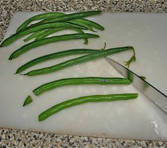
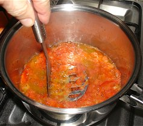
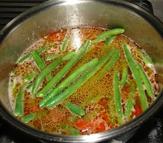
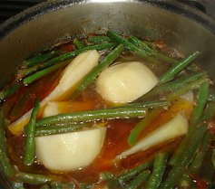
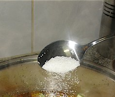
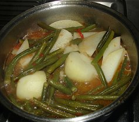

Fagioli con patate
Beans & potato stew
as Mum called it Fagiola chi patati
This dish is traditionally a summer dish although beans are now available throughout the year in a lot of places. It can be used as a side dish for a meat or fish or simply eaten with bread as I have shown. I have also added sliced carrots to the mix, especially if I am using it as a side to a main course.

Method
-

Prepare the beans as shown if they are stringless, otherwise you must also remove the string. If using young borlotti beans (the bean shell is tender and mainly green as it begins to turn pink) the string can be sliced off along the length.
-

Remove the seeds and stalk of tomatoes and chop.
Slice the garlic cloves and cook both in a saucepan with olive oil generously covering the base.
Mash the mixture when the tomato is soft.
-

Add enough water to cover the beans and potatoes.
Add the prepared beans and heat the watery sauce to boil and let it simmer.
-

When the beans begin to change colour add the potatoes which have been cut into quarters. You can experiment with the size of the potato pieces and when to add them so that the potatoes do not overcook and break apart.
-

Add salt to taste. I like to add enough salt so that the vegetables do not diminish their flavour. Of course you can experiment with how much salt or if you don’t want to add salt at all.
-

The watery sauce will reduce while cooking and the beans will change colour and not be a bright green. At this point, if the potatoes are cooked, the vegetable stew is ready.
To serve
Serve in a dish with tasty crusty bread.